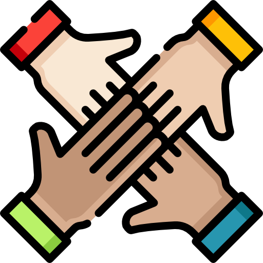

Inclusão

O que é a inclusão?
Inclusão social é garantia que todas as pessoas tenham acesso iguais a oportunidades,
recursos e direitos na sociedade. Contudo, isso significa que todos tem a chance de participar
de uma coletividade.
Podemos considerar como parte desse grupo as pessoas portadoras de
deficiências físicas, motoras e cognitivas, os negros, indígenas, homossexuais,
transexuais e pessoas com pouco ou nenhum recurso financeiro. Ou seja, seres humanos que,
de alguma forma, saem do padrão de normalidade criado pela sociedade.
Benefícios da Inclusão Social:
• Diversidade e Envolvimento: Promove a diversidade e o envolvimento de todos os grupos sociais na vida
pública e privada.
• Desenvolvimento Humano: Contribui para o desenvolvimento humano ao permitir que todos tenham acesso a
educação, saúde, emprego e participação na sociedade.
• Redução de Desigualdades: Combate as desigualdades sociais, econômicas e políticas, promovendo uma
distribuição mais equitativa de recursos e oportunidades.
• Crescimento Econômico: Estimula o crescimento econômico ao aproveitar todo o potencial de talentos e
habilidades disponíveis na sociedade.
• Coesão Social: Fortalece a coesão social e a harmonia entre diferentes grupos, reduzindo conflitos e
divisões.
Estratégias para Promover a Inclusão Social:
• Políticas Inclusivas: Implementação de políticas públicas que garantam igualdade de oportunidades e
proteção dos direitos de todos os cidadãos.
• Educação e Sensibilização: Promover programas educacionais e campanhas de sensibilização para combater
estereótipos, preconceitos e discriminação.
• Acesso Universal: Garantir acesso universal a serviços básicos como saúde, educação, habitação, transporte
e emprego, especialmente para grupos marginalizados.
• Participação Cidadã: Incentivar a participação ativa da sociedade civil e dos grupos vulneráveis na
formulação de políticas e programas que afetem suas vidas.
• Apoio Institucional: Apoiar iniciativas de organizações não governamentais (ONGs), empresas e instituições
públicas que promovam a inclusão social e a diversidade.
Referências bibliográficas:
•
https://www.cnnbrasil.com.br/politica/inclusao-social/#:~:text=%C3%89%20um%20meio%20de%20erradicar,democratiza%C3%A7%C3%A3o%20dos%20espa%C3%A7os%20e%20servi%C3%A7os
• https://brasilescola.uol.com.br/educacao/inclusao-social.htm
• https://blog.psicologiaviva.com.br/inclusao-social/